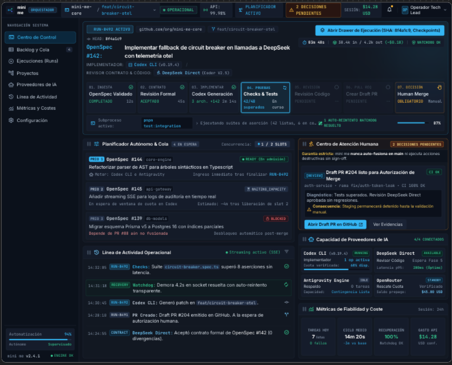
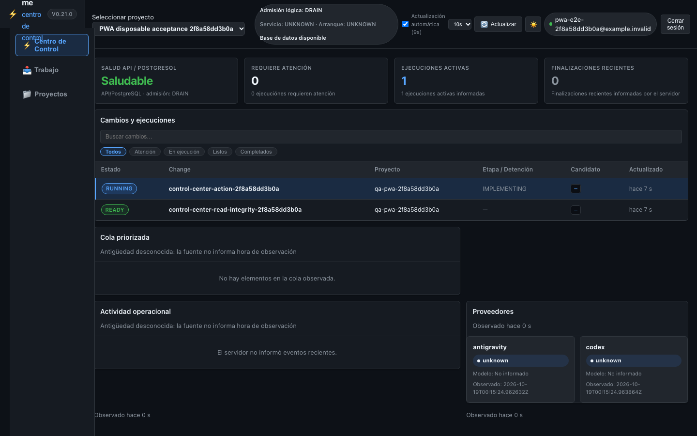
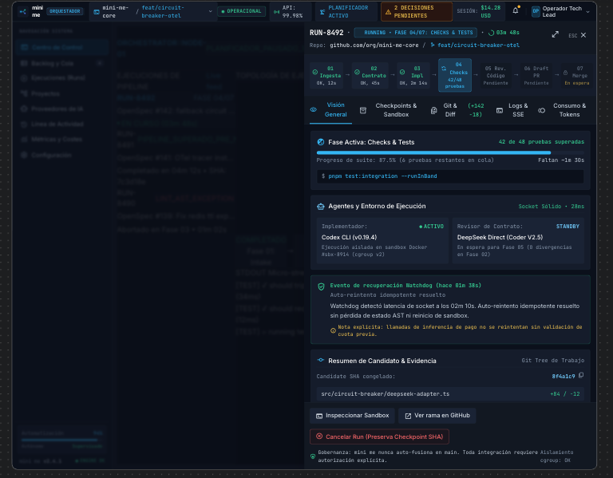
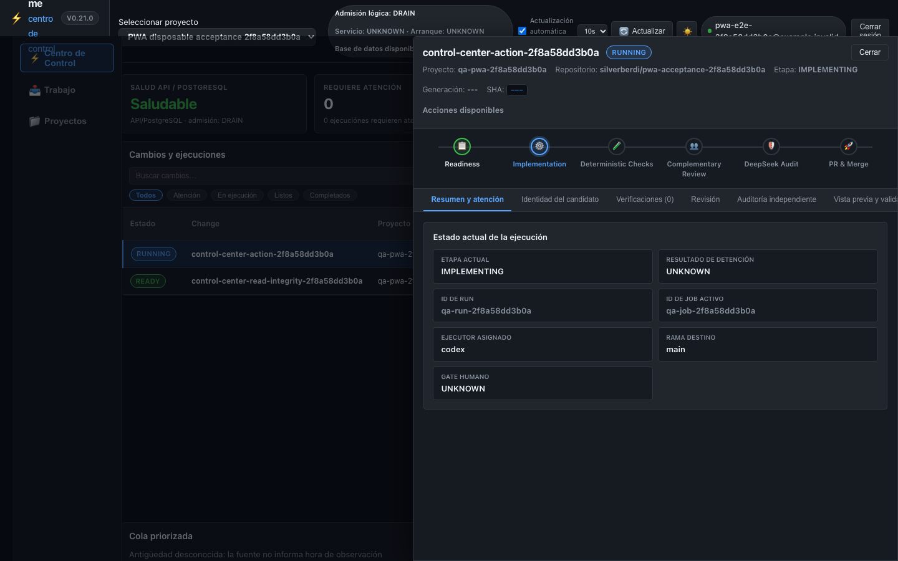
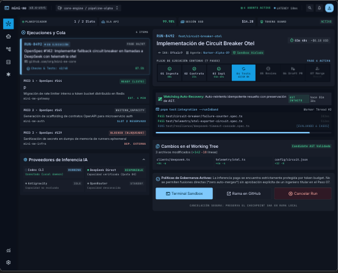
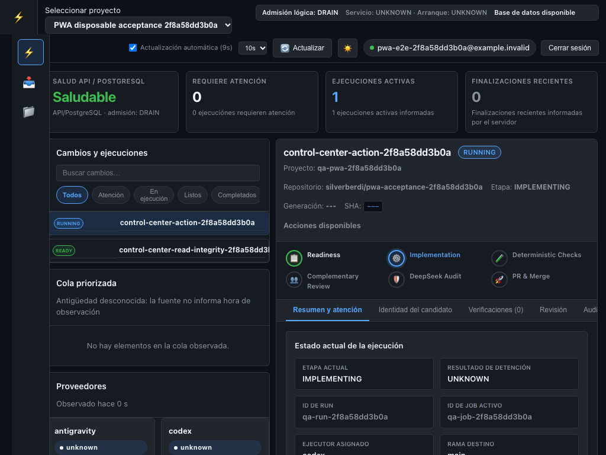
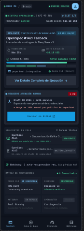
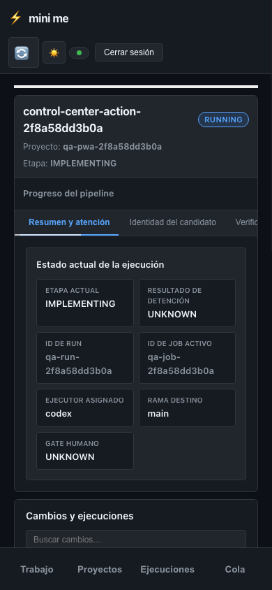
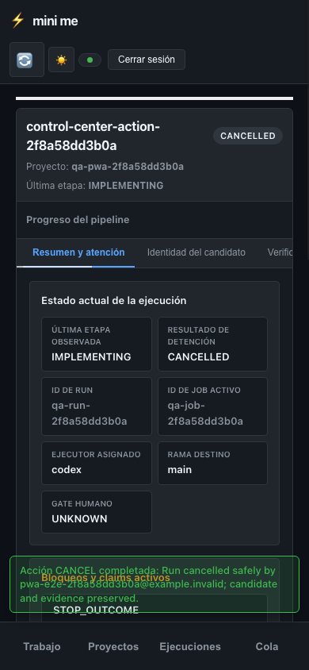

Control Center — referencia aprobada / implementación actual
Comparación para aceptación humana · referencias Stitch aprobadas a la izquierda · capturas Chrome con backend y PostgreSQL desechables a la derecha.
01 · Desktop — centro de control activo
Referencia 01
Implementación · 1440×900
03 · Desktop — drawer de Run
Referencia 03
Implementación · 1440×900
05 · Tablet — master/detail
Referencia 05
Implementación · 1024×768
07 · Mobile — supervisión activa
Referencia 07
Implementación · 390×844
Estado terminal · cancelación y notificación
Run CANCELLED con etiqueta íntegra Toast sin cubrir navegación inferior
Toast sin cubrir navegación inferior